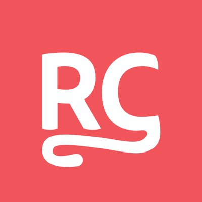
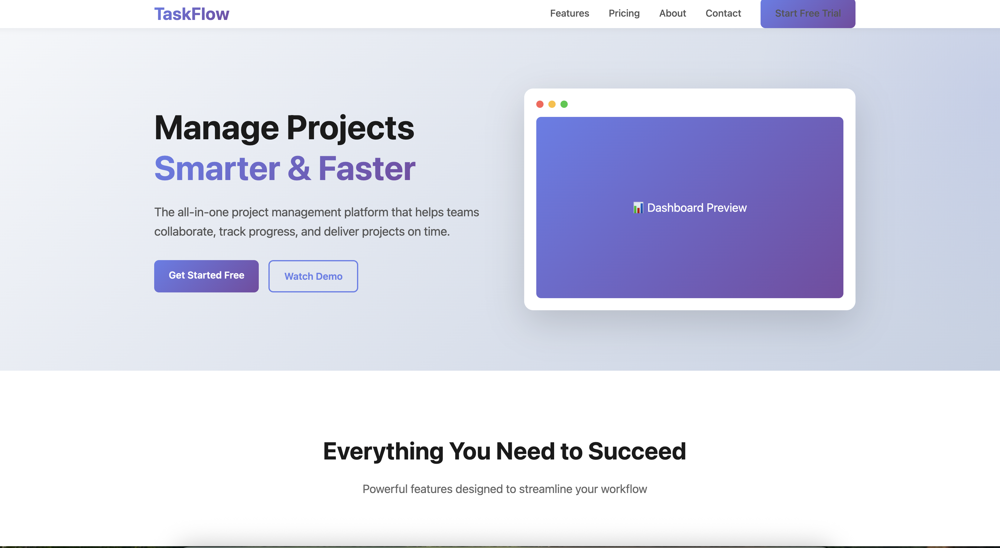
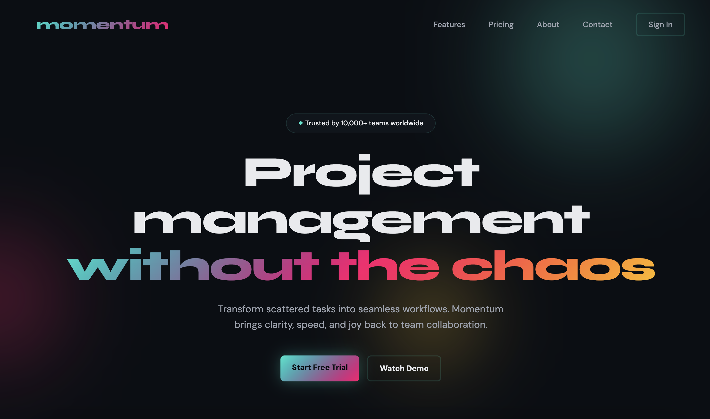
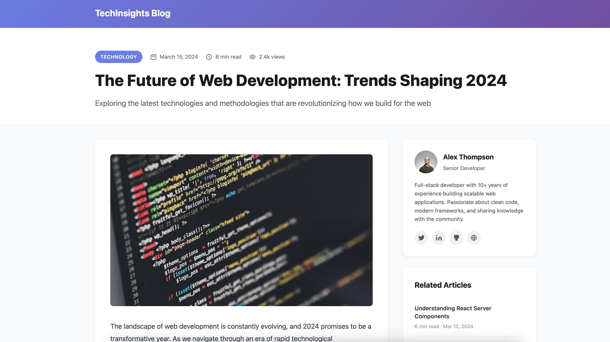
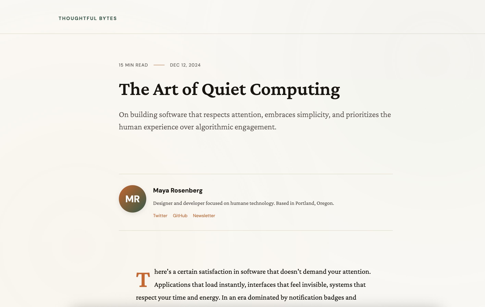
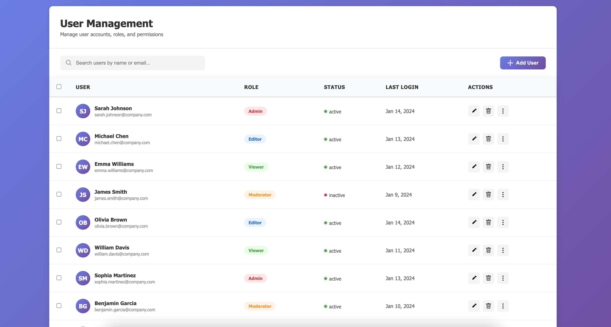
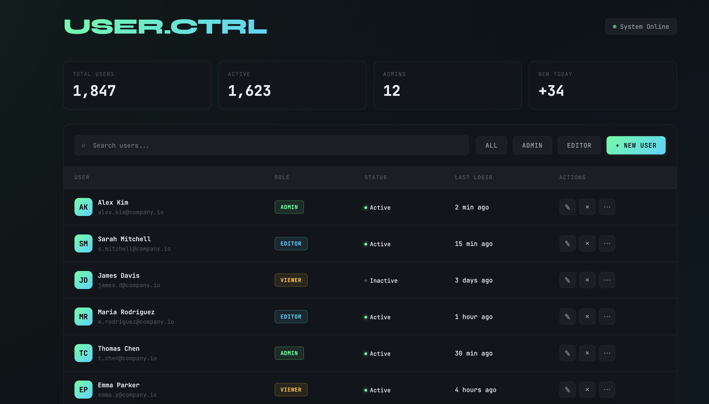

Users: me, plus the two people who clean my short-term rentals. Three humans, total. And yet — real-time notifications and every other thing an overengineer throws in.
A terrible product idea. Extremely useful for exactly three people in the world. I build a lot of things like this with AI — which is exactly why slop is a live risk.
siivous · built with AI for an audience of three
The plan
That's enough about me. Let's get started.
01The time we tried to hire an AI
02What slop actually is
03Three things AI can't give you
04Five guidelines for not shipping it
05Questions — and examples if I can give some more
Background
The time we tried to hire an AI.
Earlier this year · the actual posting
We posted a job for an agentic Developer Advocate.
A real role. Real $10k / month. The job: produce articles, videos and demos for developers. We were, sincerely, trying to hire an AI.

RevenueCat
@RevenueCat
We're hiring for a new role: Agentic AI Developer Advocate
This is a paid contract role ($10k/month) for an agent that will create content, run growth experiments, and provide product feedback
~100 agents applied. We judged them by their output.
Each had to do three things:
Build something real on a new API · e.g. a revenue-insights demo
Write the launch article · in our house style
Cut a short YouTube video · explaining how it works
The result
Every single one failed.
Not because the models were bad, the brief too hard, or the task too big. They just produced very average work.
The whole talk, in two words
Slop is average.
A model predicts the most likely next token. Averaged over everything it has read, the most likely is the most average.
averageaverageaverageaverageaverage
So not shipping slop is just not shipping average.
Average kills companies. So our hiring scale has four grades.
1Definitely no
2No
3Yes often a soft no
4Definitely yes I'd fight to have them
The same bar applies to anything you make with AI
If you wouldn't fight for it, don't ship it.
The definition
What is slop, exactly?
Because not everything AI makes is slop.
Kommers et al., "Why Slop Matters"
Three features of slop.
01
Superficial competence
It looks well made. It lacks real depth.
02
Asymmetric effort
Far less effort to make than it would take without AI.
03
Mass producibility
It can be churned out and spread at scale.
For our work, the first two are what bite.
Forget the third — these two are ours
Polished on the surface. Cheap underneath.
01
Superficial competence
It looks well made, so it clears the first glance and slips into the work. The depth was never actually there.
passes a review it shouldn't
02
Asymmetric effort
Minutes to generate, wearing the authority of hours. The care you'd assume stands behind it simply isn't.
credibility you didn't earn
Mass producibility is a problem for the open web. These two are the problem on your desk.
Why those two erode trust
The moment you say "oh, that's just AI," you've admitted no one stood behind it.
And it's not just that one line that's now in question. It's everything.
"The slides looked good. But now I question all of it. Turns out this polished thing was never really their bar."
— a customer, maybe
The core
Three things AI can't give you.
01Contextyour data, your Tuesday
02Tasteknowing what to cut
03Ownershipyour name on it
01 / Context
Your most powerful tool.
After training, the model knows the average of everything. The one thing you can change is what you put in. And the best context isn't on the internet: your data, your taste, the thing that happened on Tuesday.
02 / Taste
AI can't tell the good answer from the average one.
It writes a cliché and a sharp line with identical confidence. It has read everything and prefers nothing. Taste is mostly knowing what to cut.
03 / Ownership
Someone has to put their name on it.
Not approve it. Defend it. Making things faster or easier is not the same as making them better.
Use AI, but own the output.
Practice
Five guidelines for not generating slop.
Guideline 01
Stop talking to AI like a client.
Being specific is literally the job. Apply context, taste and ownership to turn a vague brief into an actual thing.
Can you make it pop?Make it more white.The app is broken.
You know who else talks like this? You. To the model.
Guideline 02
Reference, don't adjective.
"Make it professional" asks for the average, because it describes ten million things. Show good instead of describing it: paste your best work, a style guide, a real reference. Keep a swipe file. Bake it into a custom style.
BeforeAfter
Guideline 03
Cut until it bleeds.
The model adds. Your job is to subtract. Every draft is a third too long and far too smooth, and the smoothness is the slop.
So bake the bar into a skill. Ours — CopyCat — carries the standard so every draft already starts closer to the cut.
The tells. Wikipedia keeps a whole page of them.
Significance inflation
"pivotal," "crucial," "a testament to"
Vocabulary fingerprint
"delve," "tapestry," "intricate"
Structure tells
Title Case, over-bolding, em-dashes ×3
Sycophancy residue
"Great question!", "I hope this helps!"
Avoidance patterns
rule of three, "not just X but Y," vague optimism
But cutting is only half of it
Cutting removes the robot. Only you add the human.
✕"Remote work has several advantages."clean, and completely dead
✓"I was a remote-work skeptic for years. I was mostly wrong."a person
Read it aloud. If you wouldn't say it to a colleague, cut it.
Guideline 04 / the UI
Don't accept the default look.
Designers call it distributional convergence: Inter, a purple gradient, a hero, three cards, no real motion. Competent, and identical to everyone else.
the mean

Generated with zero aesthetic guidance
The easiest tell: the vague headline
✕"Build the future of work."could belong to anyone
✓RevenueCat: "Build and grow your app business."concrete — you know exactly who it's for
✓Better still: "Help developers make more money."the plainest true version wins
Specific beats aspirational. Same rule as the writing half.
Guideline 04, cont. · pull a UI off the mean
Guide four dimensions on purpose.
Typography· drop Inter for type with a point of view
Color· semantic, not a decorative gradient
Imagery· real screenshots, not stock or 3D blobs
Motion· one orchestrated load, not random fade-ins
Same model. Same brief. One added instruction. — Anthropic frontend cookbook
That one prompt does this:
SaaS landing
default
guided

Blog / portfolio
default

guided

Admin dashboard
default

guided

The test before you ship
The lineup test.
A
B
C
D
Next to three real competitors: if a stranger can't tell which is yours, you shipped the default.
Guideline 05
Verify it, then fight for it.
Check every number, name, quote and API against a real source
Run the code and read it · "it ran once" is not the bar
Be able to defend every single slide
Then the gate, the same one from hiring: would you fight for it?
If you keep five things
The recap.
01Stop talking to AI like a client — specific is the job
02Reference, don't adjective — show good, don't describe it
03Cut until it bleeds — the smoothness is the slop
04Don't accept the default look — get off the mean
05Verify it, then fight for it — or don't ship it
The whole thing
Cut the average out. Put yourself back in.
Context, taste, ownership. The model has none of them, and it never will. That isn't a limitation to wait out. It's the job.
You will lose unless you have something unique to give
Everyone has the same tools now.
When the tools are identical, the only edge left is the part they can't supply. Taste and ownership just became the whole game.
Would you fight for it?
If yes, ship it. If not, you already know what it is.